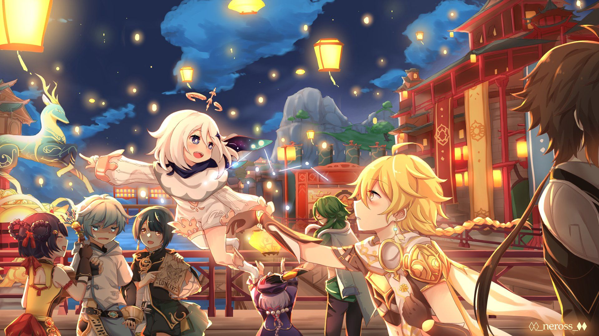

My Mana recharging activities
When I'm tired and have a lot of time in my hands, I usually do these things to keep me occupied and entertained.

Video Games
Video games is a double edge sword. It's either you win and be happy about it, or you lose and be miserable.
Chess
I also have a "love and hate" relationship with this sport. It's like math but people are too competitive about it.

Guitar
The guitar is the best instrument. Playing it always soothes me, and it's also convenient since you can carry it around.